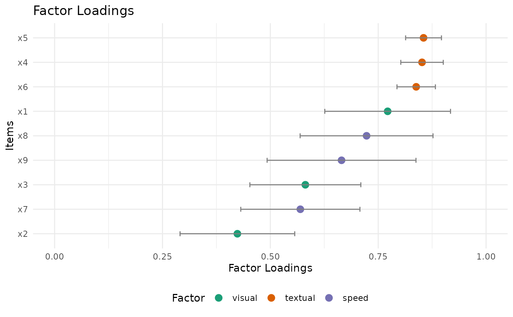

This is a plot method for fitted lavaan objects, including
CFA and SEM workflows created with lavaan::cfa(),
lavaan::sem(), and related functions. It allows users to
create different types of plots to visualize key aspects of
lavaan models, including factor loadings, residuals, and
path diagrams.
Usage
# S3 method for class 'lavaan'
plot(x, type = "factor_loadings", standardized = TRUE, ci = TRUE, ...)Arguments
- x
A fitted
lavaanmodel object (for example fromlavaan::cfa(),lavaan::sem(), orlavaan::growth()).- type
A character string indicating the type of plot to generate. Options are:
"factor_loadings": Generates a dot plot of standardized factor loadings (=~parameters), optionally including confidence intervals. If the model has no measurement component, an error is raised."residuals": Generates a residual plot to visualize the differences between observed and model-implied covariances."path": Generates a path diagram representing the model structure, showing the relationships between latent and observed variables.
- standardized
Logical; if
TRUE, uses standardized estimates for factor loadings. Only applicable whentype = "factor_loadings". Defaults toTRUE.- ci
Logical; if
TRUE, includes confidence intervals in the factor loading plot. Only applicable whentype = "factor_loadings". Defaults toTRUE. Also acceptsCIvia...for backward compatibility.- ...
Additional arguments passed to the specific plotting functions.
Value
A ggplot object for factor_loadings and residuals
plots if ggplot2 is installed, or a semPlot diagram
object for path plots. An error message will be returned
if required packages are not available.
Details
Factor Loadings Plot: Displays a dot plot of factor loadings (
=~parameters only), with items on the y-axis and loadings on the x-axis. Confidence intervals can be added if desired.Residuals Plot: Shows the residuals (differences between observed and model-implied covariances), typically as a heatmap or scatterplot.
Path Diagram: Illustrates the structure of the model, showing latent variables, observed variables, and the estimated relationships between them.
See also
plot-methods for an overview of plotting in the package.
plot_factor_loadings()which is called by this method for type = "factor_loadings".
Examples
if (requireNamespace("lavaan", quietly = TRUE) &&
requireNamespace("ggplot2", quietly = TRUE)) {
library(lavaan)
library(psymetrics)
hs_model <- 'visual =~ x1 + x2 + x3
textual =~ x4 + x5 + x6
speed =~ x7 + x8 + x9'
fit <- cfa(hs_model, data = HolzingerSwineford1939, estimator = "MLR")
plot(fit)
} else {
message("Please install 'lavaan' and 'ggplot2' to run this example.")
}
